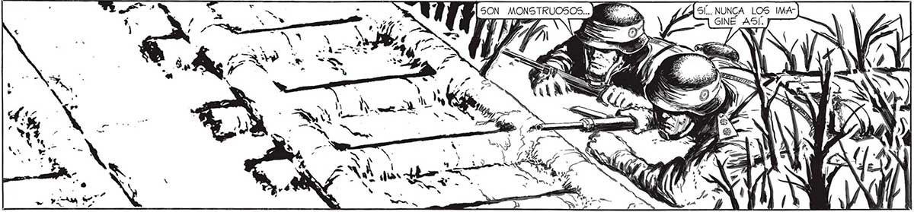
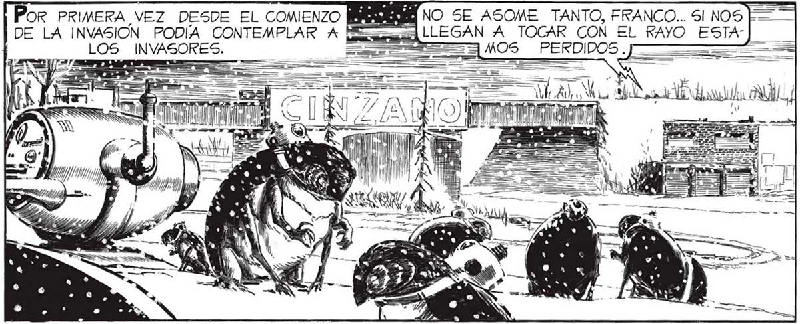
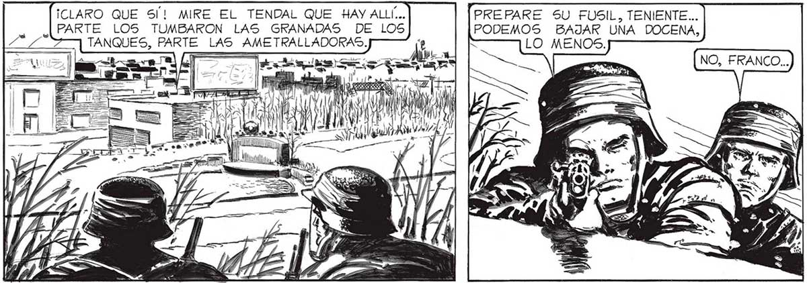

B| SON MONSTRUOSOS... BE" Por PRIMERA VEZ DESDE EL COMIENZO | DE LA INVASIÓN PODIA CONTEMPLAR A PE LOS ÍÑ NO SE ASOME TANTO, FRANCO... 51 NOS “A LLEGAN A TOCAR CON EL RAYO ESTAINVAS e Cir . = _ bos Al 0/11 o $, a - E | ¡CLARO QUE S!! MIRE EL TENDAL QUE HAY ALLÍ... PARTE LOS TUMBARON LAS GRANADAS DE LOS TANQUES, PARTE LAS AMETRALLADORAS. PREPARE SU FUSIL, TENIENTE... PODEMOS BAJAR UNA DOCENA, LO MENOS. PA Ml ALA A - E NO PUEDEN HABER ELEGIDO UN Sí... NUNCA LOS IMA- 91 GINÉ ASÍ. ¿CREE QUE LAS BALAS LES A“ LUGAR PEOR PARA APOSTARSE ... DESDE AQUÍ PODREMOS BARRERLOS A TIROS. E MATARÍAMOS UNA DOCENA, ES POSIBLE, PERO_ DESPERDICIARIAMOS UNA OCASION ÚNrCA DE ANIQUILARLOS A TODOS... ¡DEBEMOS APROVECHAR QUE ES TAN_TAN MAL A1] POSTADOS !


